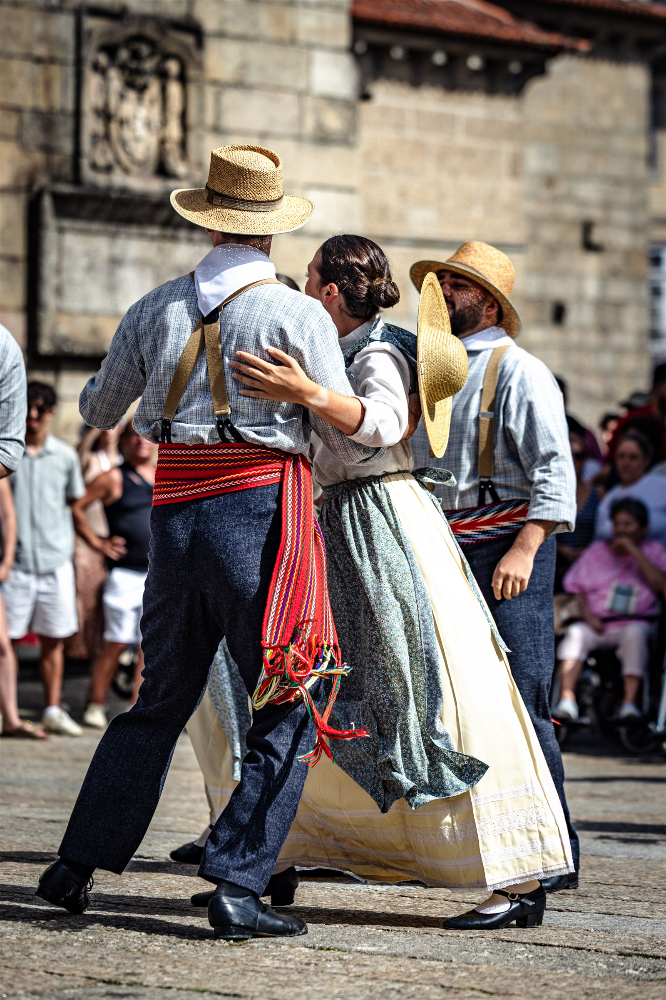
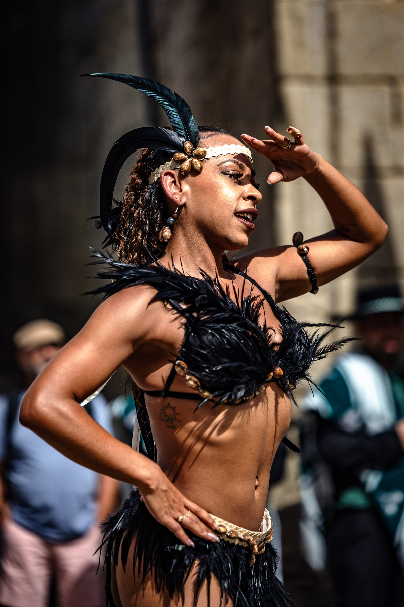

Fest’In Folk Corredoura closed its 13th edition in Guimarães on Monday 10 August after an eight-day programme that turned public spaces across the city into stages for folk dance, music and traditional culture. The event began on 3 August and brought together groups representing seven nationalities.

The historic Campo de S. Mamede served as the programme’s main stage, hosting three international galas on 7, 8 and 9 August. The wider schedule also carried parades and performances through different parts of the municipality, bringing the festival into the streets rather than confining it to a single venue.
The CIOFF International festival directory classifies Fest’In Folk Corredoura as a recognised international festival. Its programme spans folk dance and music alongside traditional practices and exhibitions, reinforcing the exchange between visiting groups and local audiences.

Organised by Grupo Folclórico da Corredoura under the motto “O Mundo Dança em Guimarães”, the festival presents itself as an event built without walls and with bridges between cultures. The 2026 edition continued that approach through a citywide programme centred on collective performance and the visibility of traditional dress.
Image Media coverage
Correspondent: Paulo Nomade
Photos: Paulo Nomade